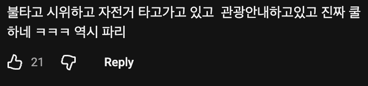
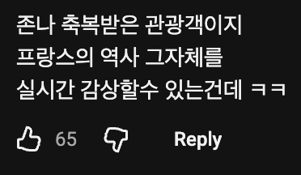

근데 그랫던 애들이 아니라 무슬림 새끼들이 태반이라는 문제가 있음
시위가 아니라 테러와 침략 ㅋㅋㅋㅋㅋ
평생 잊지못할 여행이되긴할듯
이게 진짜 파리임
시위대에 의해 곳곳이 불타는 사건 조차 컨텐츠가 되버리고
몹시 레볼루숑한 상황이네요
마지막입니다. 오늘이 참 운 좋은 분들입니다.
단두대를 마지막으로 오늘 가이드는 종료합니다
ㅋㅋㅋㅋ
불란서의 유구한 즈언통 헤볼루숑을 보고 계십니다
안전에 문제만 없다면 오히려 귀한 구경이지...
불도 소방관들이 제일 먼저 질렀데 보법이 다름
맞불작전 아닐까 ㅋㅋㅋㅋㅋㅋㅋ
실례지만 불타고 계십니다
파리는 불타고 있는가

귀중한 경험을 하고 계시네
평생 안주감 ㅋㅋㅋ
세계사는 다 배웠잖아~ 프랑스 혁명 아시죠? 그거 오마쥬입니다 오마쥬~
나도 파리갔을때 시위한다고 불탔었는데 ㄹㅇ 역사임 ㅋㅋㅋ
퍼레이드ㅋㅋㅋㅋ
환영행사 같은건가??
괜히 불난서가 아니지
선진국 망하는거 실시간으로 직관하는게 더 귀중한 구경거리라고 ㅋㅋㅋ
참 병신같은 나라야
전소되기전에 얼른보세요 ㅎ
엘랑 비탈 그 자체
유구하고도 역사깊은 전통 ㅋㅋ
자기들의 왕 목도 땄는데 저정도 불?? 그냥 불장난이지뭐